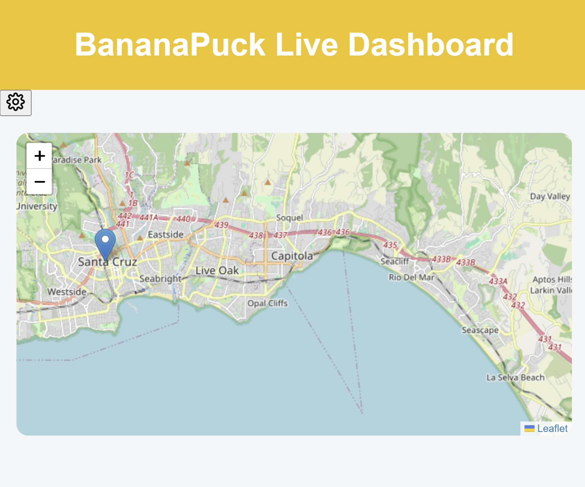
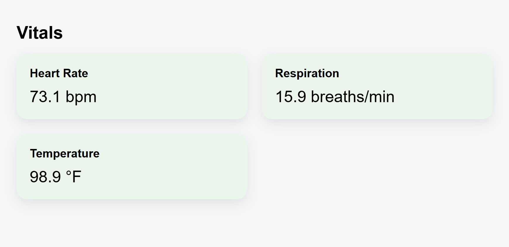
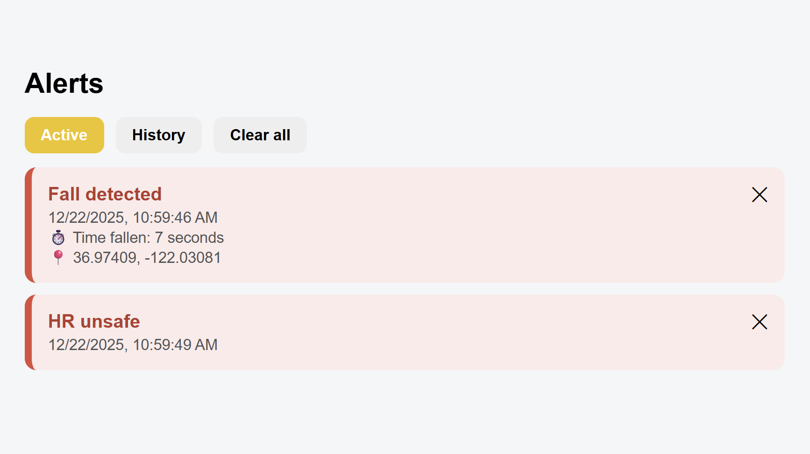

BananaPuck
Chest-worn assistive monitoring device for elderly & rehabilitation patients
Overview
BananaPuck is a compact, adhesive wearable designed to continuously monitor physiological signals, movement, and environmental context for elderly individuals and patients recovering from injury or surgery.
The system enables early detection of health risks while preserving user independence, extending caregiver awareness beyond clinical environments.
How It Works
Embedded sensors collect real-time data including heart rate, respiration, temperature, motion, orientation, and GPS location. Data is processed by an onboard microcontroller and transmitted wirelessly to a cloud backend.
Caregivers access this information through a web-based dashboard that provides live status, intelligent alerts, and historical trends.
High-Level Architecture:
Sensors → Microcontroller → Wireless Transmission → Server Processing → Caregiver Application
Why It Matters
Many medical emergencies are preceded by subtle physiological or behavioral changes that go unnoticed. BananaPuck captures these early indicators, allowing caregivers to intervene before critical events occur.
The system balances safety and autonomy by providing continuous monitoring without restricting daily activity.
Caregiver Dashboard
The BananaPuck web dashboard presents live and historical patient data in a clear, actionable format. It is designed for rapid interpretation under high-stress conditions.
Live Map & Location Awareness
A real-time map view displays the patient’s current GPS location, enabling fast response in the event of an emergency or fall.
Alert System
The alert panel highlights critical events such as detected falls, unsafe heart rates, or prolonged inactivity. Each alert includes timestamps and contextual information to reduce false positives and alert fatigue.
Vitals Monitoring
Dedicated cards display heart rate, respiration, and temperature in real time. Visual cues distinguish safe and unsafe ranges for quick assessment.
Environmental & Context Data
Additional panels track environmental factors such as water submergence and carbon monoxide exposure, as well as positional confidence from GPS accuracy.
Caregiver Dashboard
BananaPuck includes a web-based caregiver dashboard designed for fast, intuitive monitoring of patient status in real time.
Live Location Map
The dashboard displays the patient’s real-time GPS position on an interactive map, enabling rapid response during emergencies or falls.
Alerts & Event Tracking
Critical alerts such as fall detection or unsafe heart rate conditions are surfaced immediately, along with timestamps and contextual data to reduce false positives.
Vitals Monitoring
Heart rate, respiration, and temperature are continuously tracked and displayed using clear visual cards optimized for rapid assessment.
Environment & Context
Environmental awareness includes water submergence detection and carbon monoxide levels, providing additional context for patient safety.

Sensor Fusion & Event Detection
Fall detection is implemented using accelerometer and gyroscope data combined with temporal thresholds and post-event motion analysis.
If movement is detected after a fall-like event, alerts are automatically de-escalated to prevent unnecessary caregiver intervention.
Power & Wearability
BananaPuck is designed to be lightweight, unobtrusive, and comfortable for extended wear. Firmware scheduling and sensor polling are optimized to maximize battery life while maintaining continuous monitoring.
Project Presentation
The following presentation provides a deeper technical and design overview of BananaPuck, including system architecture, design decisions, and future development plans.
Future Work
- Expanded physiological sensing
- Machine-learning-based activity classification
- Predictive fall-risk modeling
- Clinical trials and user feedback integration